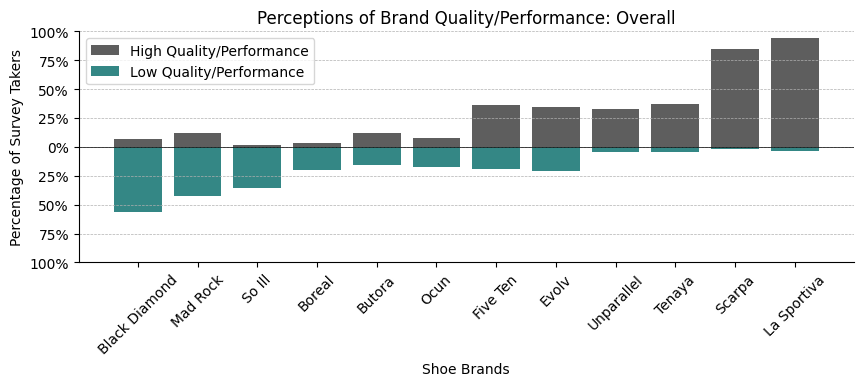
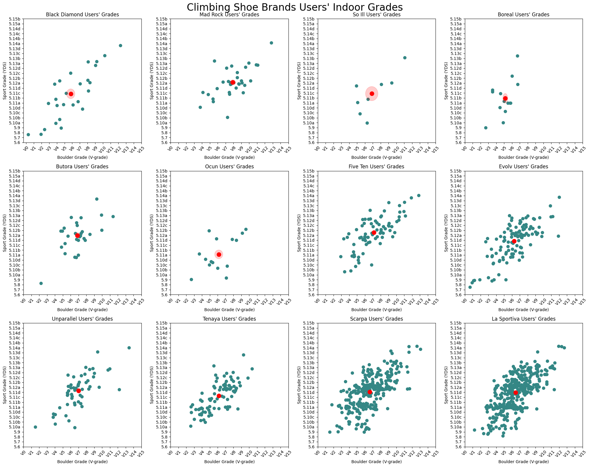

As a climber and data science enthusiast, I’ve always been curious about the influence of gear, specifically climbing shoes, on performance. The market is saturated with various shoe brands, each claiming to enhance performance. But how much does the brand of the shoe truly matter? Is it a significant factor, or is it all just marketing hype? To answer these questions, I decided to delve into a comprehensive study.
In this research, I examine the intriguing relationship between climbing shoe brands and climbing performance. I conducted a detailed survey, gathering data from climbers of various skill levels and preferences. The objective was to understand how climbers perceive different shoe brands and how these perceptions correlate with their climbing performance.
This article presents the methodology of my study, the preliminary findings, and the potential implications of these findings for the climbing community and the climbing shoe industry. It also discusses the limitations of the study and outlines directions for future research. Whether you’re a climber curious about how your shoe choice might be affecting your performance, or a data science enthusiast interested in how survey data can be analyzed to uncover interesting insights, I hope you’ll find this study engaging and informative.
Rock climbing, as a sport and recreational activity, has seen a significant rise in popularity over the past few years. This surge in interest has led to an increase in the demand for climbing gear, particularly climbing shoes. Climbing shoes are a critical piece of equipment that can significantly influence a climber’s performance. They provide the necessary grip and precision that climbers need to navigate through challenging routes and boulders.
There are numerous climbing shoe brands available in the market, each offering a variety of models designed to cater to different climbing styles and levels of expertise. Some of the well-known brands include La Sportiva, Evolv, Scarpa, and Five Ten, among others. These brands offer shoes that range from beginner-friendly models to high-performance ones used by professional climbers.
The choice of climbing shoes can be influenced by various factors, including the type of climbing (bouldering, sport climbing, traditional climbing), the climber’s skill level, and personal preferences in terms of fit and comfort. Moreover, the perception of a brand’s quality can also play a significant role in the decision-making process.
However, despite the wide range of options and the importance of climbing shoes, there is a lack of comprehensive studies that explore the relationship between climbing shoe brands and climbing performance. This gap in research is what motivated the current study. The goal is to understand how different shoe brands impact climbers’ abilities across various difficulty levels and to explore climbers’ perceptions of different brands.
Before I delve into the details of the study, let’s take a visual tour of the climbing shoe brands that the respondents use. The word map below represents the various climbing shoe brands mentioned by my survey participants. The size of each brand name corresponds to the number of users of that brand among my respondents.
This word map provides a snapshot of the popularity of different climbing shoe brands among the survey participants. As I move forward, I’ll explore how these brands impact climbing performance and how climbers perceive them.
The primary objective of this study is to explore the relationship between climbing shoe brands and climbing performance. With a myriad of shoe brands available in the market, each offering a variety of models with different features, it can be challenging for climbers to make an informed choice. While personal comfort and fit are crucial, the impact of the shoe brand on climbing performance is often a subject of debate among climbers.
In this study, I aim to shed light on this topic by analyzing data collected from a survey of climbers. The survey includes questions about the climbers’ shoe brand preferences, their perceived impact of these brands on their performance, and their climbing habits and achievements.
This study is part of my broader goal of strengthening my grad school application portfolio for a data science masters program. By applying data science techniques to a topic I am passionate about, I hope to demonstrate my ability to conduct meaningful research and extract valuable insights from data.
The methodology of this study was designed to be comprehensive and rigorous, involving the creation of a survey, its distribution to a diverse group of climbers, the collection and cleaning of responses, and the subsequent data analysis.
The survey was meticulously designed using Google Forms, primarily consisting of multiple-choice questions. These questions were developed based on my personal knowledge and experience as a climber, focusing on factors that I hypothesized could correlate with shoe choice and performance. The survey covered a wide range of topics, from climbers’ self-perceived skill level and actual grades climbed to their frequency of climbing and duration of climbing experience, as well as demographic data.
The survey was open for responses for approximately one week. Initial distribution was among climbers I knew personally, and after gathering their feedback, I expanded distribution through flyers at local gyms, posts in popular climbing subreddits, and posts in climbing-focused Facebook groups. This multi-pronged approach yielded a total of 1,132 responses.
The data cleaning process was an essential step to ensure the accuracy of the analysis. I developed Python scripts and Excel formulas to standardize the format of heights and weights and to convert all boulder and sport climbing grades to the Verm scale and YDS scale, respectively. Any data that did not convert properly was adjusted manually to ensure consistency.
The data analysis was conducted using Python, with libraries such as matplotlib, numpy, pandas, and PIL. I created a variety of graphs to visualize the data, including side-by-side bar charts comparing self-assigned experience level with actual grades climbed, and scatter plots showing the average grades for climbers of each shoe brand. These visualizations were supplemented by statistical methods to calculate averages and standard errors.
Ethical considerations were paramount throughout the study. Participants were informed at the outset about how their data would be used and stored, and were assured that their personal information would remain confidential and would only be used for the distribution of Amazon gift cards at the conclusion of the study. I am the sole individual with access to the collected data, ensuring its security and confidentiality.
The analysis of the survey data has yielded some intriguing findings, most notably an inverse correlation between the reputation of climbing shoe brands and actual climbing performance.
Interestingly, brands such as Butora, Mad Rock, and Five Ten, which were perceived less favorably than brands such as La Sportiva and Scarpa, were actually associated with higher performance levels based on the climbing grades achieved by their users. This counterintuitive trend suggests that the perceived quality of a shoe brand may not always align with its impact on climbing performance.
This finding was visually represented through a series of scatter plots. For each shoe brand, climbers’ grades (boulder grade on the x-axis, sport grade on the y-axis) were plotted. The average grade for climbers of each brand was calculated and plotted on a new graph, along with an ellipse describing the standard error for the computed mean, providing a clear visual representation of the performance associated with each brand.
In an effort to delve deeper into the factors influencing climbers’ choice of shoe brands, I employed a Random Forest Classifier on the survey data. The model was trained to predict the brand of shoe a climber uses based on their responses to the survey questions. The results were intriguing, revealing that demographic data, rather than climbing ability, had the most significant impact on brand use.
The list below presents the top 4 most important survey questions in predicting the brand of shoe used by the climber. The importance score represents the degree to which a question contributes to the model’s ability to accurately predict the shoe brand.
1. What is your weight?
2. What is your age?
3. How many pull-ups you can complete in one set?
4. What is your height?
Interestingly, the most influential factors turned out to be the climber’s weight, age, and the maximum number of pull-ups they can do in a set. This suggests that demographic data plays a more substantial role in determining shoe brand use than the climber’s skill level or climbing habits.
The study offers a novel exploration into the complex relationship between climbing shoe brands and climbing performance, challenging prevailing assumptions and providing valuable insights for both climbers and shoe manufacturers.
The most striking finding of this study is the inverse correlation between the perceived quality of climbing shoe brands and the actual climbing performance of their users. This suggests that the most proficient climbers prioritize the fit and functionality of a shoe for their specific climbing style over the perceived prestige of the brand. This finding underscores the importance of individual fit and comfort in climbing shoes, challenging the notion that higher-end brands necessarily equate to better performance. For climbers, this highlights the need to focus on finding a shoe that fits their foot shape and climbing style, rather than being swayed by brand reputation. For manufacturers, this suggests a potential shift in marketing strategies, emphasizing the importance of fit and comfort over brand prestige.
To my knowledge, this study is pioneering in its examination of the relationship between climbing shoe brands and climbing performance. As such, it contributes a unique perspective to the understanding of factors influencing climbing performance and opens up new avenues for further research.
The study’s primary limitation lies in the potential bias of the sample. The participants, predominantly from online climbing communities, may not be representative of the broader population of climbers, potentially skewing the results. This limitation suggests caution in generalizing the findings to all climbers.
Furthermore, some preliminary results not directly related to the primary topic of this research were released to garner more interest in the survey. This could have potentially biased future survey results, although I made the tough decision that it was worth the risk to increase the statistical significance of results found.
The findings of this study raise several intriguing questions for future research. For instance, exploring regional influences on climbers’ perceptions of shoe brands could yield interesting insights into the role of cultural and geographical factors in shaping these perceptions. Additionally, further investigation into the specific features of different shoe models and the impact of sponsorship and advertising on brand perception could deepen our understanding of the complex dynamics at play.
The central message of this study is that climbing performance is not solely dictated by the brand of shoe a climber wears. Instead, a well-fitting shoe that aligns with a climber’s specific style and needs can facilitate high performance, irrespective of the brand’s reputation. This finding disrupts common perceptions and offers valuable guidance for climbers and shoe manufacturers alike. Future research in this area holds the promise of further enriching our understanding of the factors that truly matter in climbing performance. I am currently working on a more complete paper detailing the analysis I have conducted, which will be linked here once it is complete.